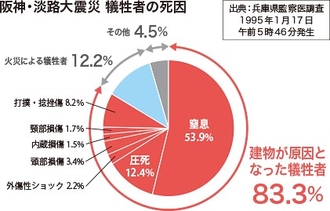

建物
地震による建物の被害
日本ではこれまでに多数の大地震が発生しており、その影響で、屋根瓦の被害、外装材の被害、老朽化による被害、バランスの悪さで起こる被害、傾斜地での被害、基礎の被害、建物内部の被害など、数多くの建物被害が生じている。
参照[1]https://www.aij.or.jp/jpn/seismj/wood/wood-1.htm
1995年に発生した阪神淡路大震災、2011年の東日本大震災では多くの建物が倒壊し、たくさんの命が奪われた。
地震による建物被害で恐ろしいのは、揺れ方により、建物自体が倒れたり、室内で家具や電気製品が転倒・落下することである。また、地震によって火災が発生し、住宅密集地では消火活動が遅れ、多大な二次被害が発生してしまう場合もある。
参照[2]https://www.daiken.jp/building-materials/earthquakeresistance/fear.html#:~:text=%E5%9C%B0%E9%9C%87%E3%81%AB%E3%82%88%E3%82%8B%E8%A2%AB%E5%AE%B3%E3%81%A7,%E4%B8%8B%E3%81%99%E3%82%8B%E3%81%93%E3%81%A8%E3%81%A7%E3%81%99%E3%80%82
地震による建物被害の種類
◎ 建物の倒壊
地震によって1階部分が崩れてしまったり、傾いてしまったりといった被害が多い。
地震の周期とお木造住宅固有の周期が合致してしまった場合、共振現象が発生して倒壊してしまう。阪神・淡路大震災では、犠牲者の約8割が建物の倒壊が原因で亡くなっている。

図1「阪神・淡路大震災 犠牲者の死因」
引用[2]https://www.daiken.jp/building-materials/earthquakeresistance/fear.html
◎ 建物の火災
火元を消せなかったり、ガス管が破裂してしまっていたりといったことが原因で、木造住宅は、火災が発生しやすい。火が燃え移る「もらい火」やほかに燃え移る「延焼」によって大火災が発生する。家庭内の火元を消せなかったり、ガス管の破断といった不作為の状況によって、更に火災が発生しやすく被害が大きくなる。
◎ 内装の損壊
建物が倒壊しない場合でも、内装の損壊が多い場合がある。例えば、棚の中のガラス製品が地震の揺れによって割れてしまうこともある。ガラスが飛び散ることで怪我をする危険性が高い。建物が無事でも、家具や電気製品の転倒、ガラスの飛散などは大きな被害につながる。
参照[3]https://www.kantei.go.jp/jp/headline/bousai/jishin.html
地震による建物被害の対策
まず、建物による建物倒壊は、どんなに対策をしても100％防げるものではない。
地震には揺れの種類があるため、揺れの種類によってどのような対策をするかが重要である。
◎倒壊被害の対策
地震での建物の倒壊を防ぐ対策で最も重要度の高いことは建物の耐震性を強化することである。強度を確かめるために耐震診断を受け、建物のどの部分の耐震性が低いかを診断し、工事が必要な個所を知ることが大切である。柱と柱のつなぎ目を強化したり、柔軟性を高めたり、壁が劣化している場合は、壁を変えるか、補強ボードを取り付けて耐震性を高めていくことが大切である。
参照[4]https://www.mlit.go.jp/jutakukentiku/house/jutakukentiku_house_fr_000043.html
◎火災への対策
地震による火災の被害の原因は、「電化製品の破損または誤作動」が全体の51％を占めている。そのため、ブレーカーを落としたり、コンセントを抜いたり、火を止めるなどの、「電化製品の破損または誤作動」への対策が、地震による火災の被害を防ぐのに最も効果的な対策である。
参照[5]https://www.soumu.go.jp/menu_kyotsuu/important/103794_05.html
◎ 内装被害への対策
内装被害で恐ろしいことはガラスの飛散などの被害である。この被害を防ぐためには、飛散防止フィルムを貼ったり、地震に強いガラスに交換したり、窓にカーテンをかけるなどの対策が効果的である。また、家具や電化製品の転倒には、家具の配置を見直したり、家具転倒防止グッズを使って家具を固定するなどの対策も効果的である。
参照[6]https://www.fdma.go.jp/publication/database/kagu/post1.html
参考文献
[1]地震による建物の被害 日本建築学会 (https://www.aij.or.jp/jpn/seismj/wood/wood-1.htm)
[2]地震による建物への影響 DAIKENー大建工業 https://www.daiken.jp/building-materials/earthquakeresistance/fear.html#:~:text=%E5%9C%B0%E9%9C%87%E3%81%AB%E3%82%88%E3%82%8B%E8%A2%AB%E5%AE%B3%E3%81%A7,%E4%B8%8B%E3%81%99%E3%82%8B%E3%81%93%E3%81%A8%E3%81%A7%E3%81%99%E3%80%82
[3]地震では、どのような災害が起こるのか 首相官邸ホームページ https://www.kantei.go.jp/jp/headline/bousai/jishin.html
[4]建築：住宅・建築物の耐震化について 国土交通省 https://www.mlit.go.jp/jutakukentiku/house/jutakukentiku_house_fr_000043.html
[5]地震後の火災防止について（注意喚起）総務省 https://www.soumu.go.jp/menu_kyotsuu/important/103794_05.html
[6]地震による家具の転倒を防ぐには 総務省消防庁 https://www.fdma.go.jp/publication/database/kagu/post1.html